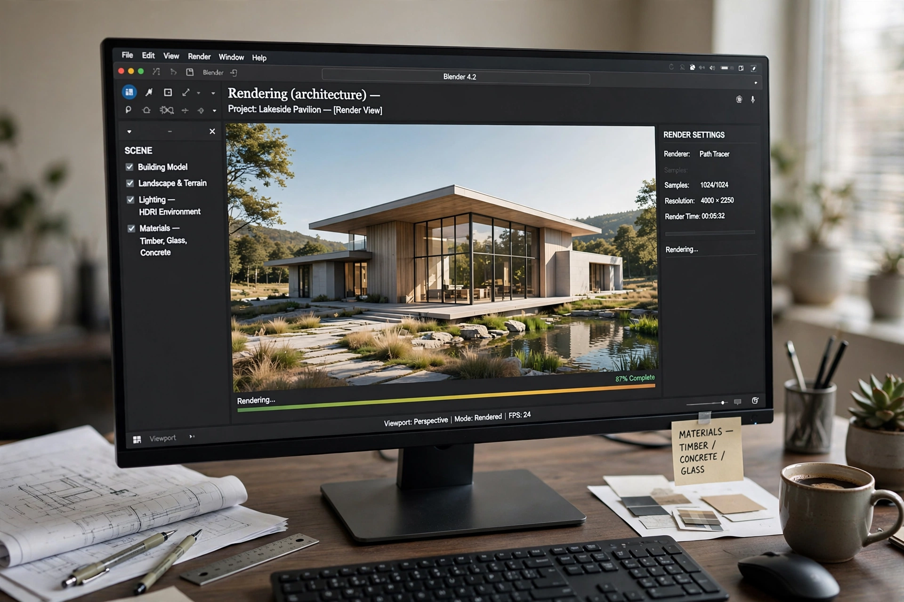

In architecture, a rendering is a visual representation of a proposed building or space, produced before construction to communicate design intent. The term covers hand-drawn perspectives, watercolor presentations, and modern computer-generated imagery (sometimes called archviz).
Traditional renderings were drawn in pencil, ink, marker or watercolour using perspective construction. Digital rendering builds a 3D model in software such as SketchUp, Revit or 3ds Max and renders it with engines such as V-Ray, Lumion or Unreal Engine, adding materials, lighting, entourage (people, trees, vehicles) and post-processing in image editors.
Renderings are used in design development, client presentations, planning and competition submissions, and marketing of unbuilt properties. Photorealistic and 'verified view' renders may be required in planning applications to assess visual impact. Critics note that seductive renderings can misrepresent the finished building's materials, context and atmosphere.